Real-time spectral analysis
Kotlin captures 48 kHz audio with AudioRecord and computes RMS, peak, Hann-windowed FFT (1,024–8,192 points, 50 % overlap), octave bands and a reduced spectrum off the UI thread. Only reduced data reaches the interface.
Technical demonstration
Android real-time audio analysis & digital signal processing
An offline Android app that turns the phone microphone into a spectrum analyzer, spectrogram, chromatic tuner and practice toolkit. It demonstrates native DSP in Kotlin, pitch detection, sample-accurate audio synthesis, WAV recording and a hybrid React/Ionic interface, with no backend and no internet access.
What the project implements and what you can observe while testing it.
Kotlin captures 48 kHz audio with AudioRecord and computes RMS, peak, Hann-windowed FFT (1,024–8,192 points, 50 % overlap), octave bands and a reduced spectrum off the UI thread. Only reduced data reaches the interface.
YIN-based fundamental detection with octave-jump protection, median smoothing and a stability measure, used by the chromatic tuner, tuning monitor and harmonic analyzer.
Tone generator (sine, square, triangle, white and pink noise, sweeps) and a metronome scheduled by counting audio samples instead of timers, with click-free ramps.
Uncompressed 16-bit WAV written on a separate thread, header repair for interrupted recordings, waveform and spectrogram overviews, looped playback of a section.
Average spectra stored on a common axis, level change per octave band, new or missing peaks and warnings when microphone, sample rate or FFT size differ.
SQLite for metadata and app-private files for audio and spectra. The app declares no internet permission; its only runtime permission is the microphone. English and Spanish interface.
Authentic screenshots captured on an Android 15 phone, only resized for the web. Select one to enlarge it.
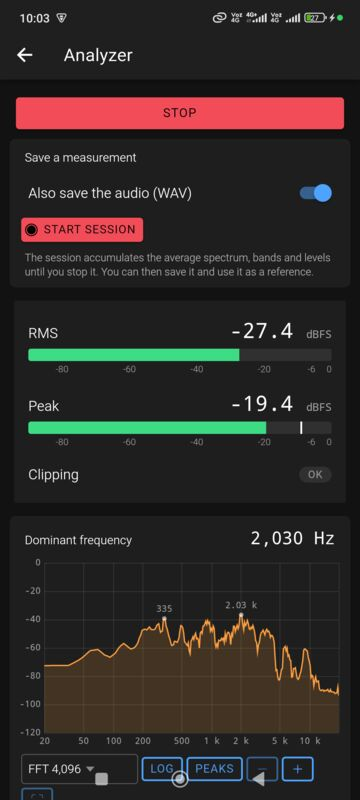
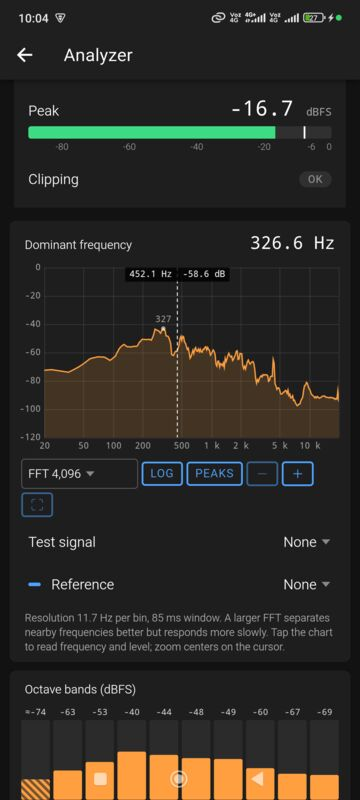
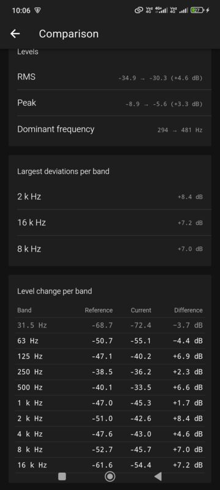
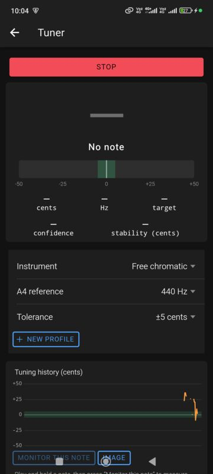
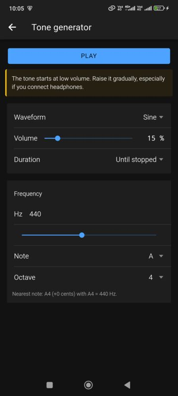
Real-time processing stays in native code; the web interface only receives reduced results.
Audio output (tone generator, metronome, playback) uses Android AudioTrack in a separate native thread. The DSP code is a pure Kotlin module tested on the JVM with synthetic signals (113 tests); the TypeScript domain logic has its own unit tests (108). The app is packaged with Capacitor 8.
| Application version | 1.1.0 (version code 2) |
|---|---|
| Application ID | com.audioscope.musiclab |
| Minimum Android version | Android 7.0 (API 24); targets API 36 |
| Architectures | Single APK for arm64-v8a, armeabi-v7a, x86 and x86_64 |
| Internet requirement | None. The app does not request the internet permission. |
| Additional hardware | None required beyond the phone’s microphone and speaker |
| Permissions | Microphone (RECORD_AUDIO) only |
| APK file size | 14,534,877 bytes (14.5 MB) |
| APK SHA-256 | eed0ab1ce009b8d4ce63ba439022628859b7e4ef2b9a993d81556c83a668b68c |
| Signature | APK Signature Scheme v2, certificate SHA-256 48:2D:47:C3:8B:41:41:E2:50:3B:0D:91:CC:52:1D:19:BC:E1:48:46:9C:29:F2:D0:EA:C5:A7:0C:EF:0C:8B:E8 |
| Interface languages | English and Spanish (follows the phone’s language), dark and light themes |
Measurements made with the phone’s microphone are approximate. Response, gain and processing vary by device. This app does not replace a certified sound level meter.
The application is provided for technical evaluation. Install it only if you are comfortable installing apps from outside an app store, and review the permissions Android shows during installation.
Real-time analyzer: RMS and peak in dBFS, clipping indicator and live FFT spectrum with labeled peaks.
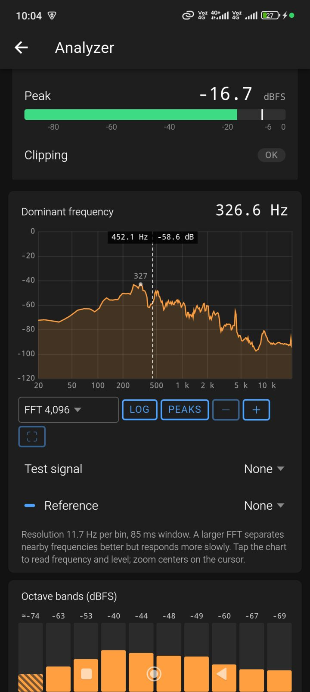
Spectrum cursor showing frequency and level at the touched point, with FFT size, scale, peak hold and zoom controls.
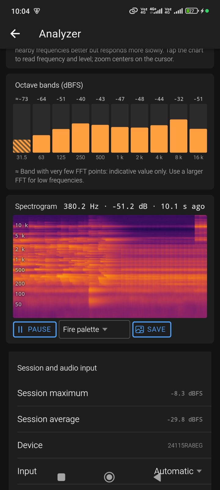
Octave bands from 31.5 Hz to 16 kHz and a scrolling spectrogram with a point readout.
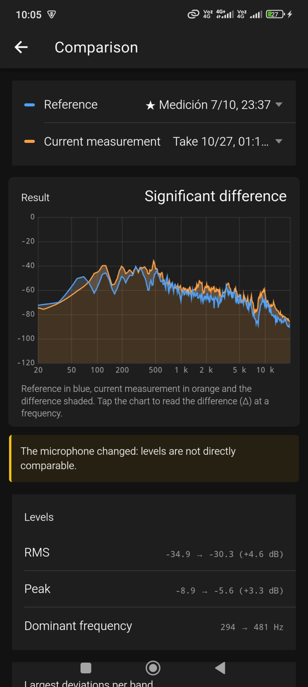
Comparison of two saved measurements: reference in blue, current in orange, with a compatibility warning.
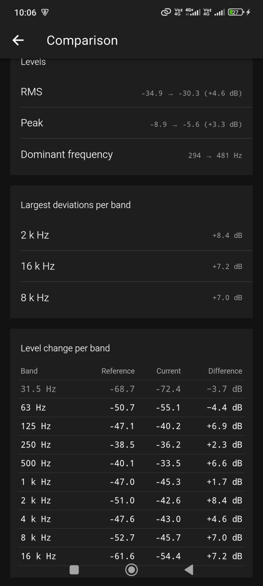
Level differences per octave band and the largest deviations between the two measurements.
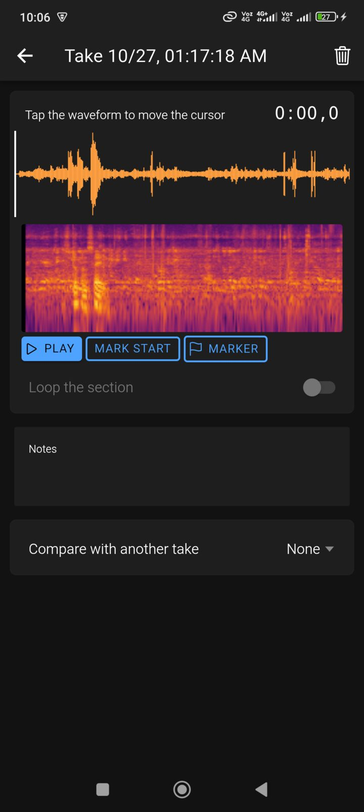
Practice recorder: waveform and spectrogram of a recorded WAV take, with playback, section and marker controls.
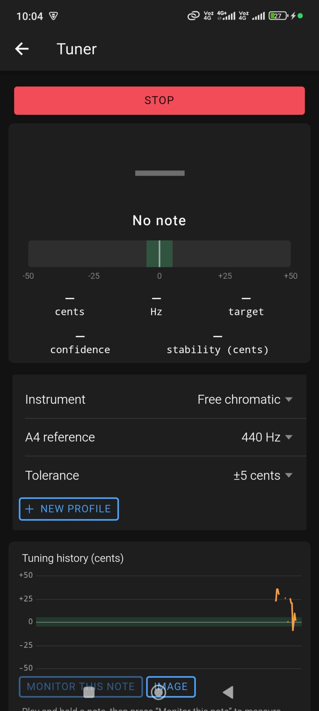
Chromatic tuner with cents gauge, presets, A4 reference, tolerance and tuning history. With only room noise it shows No note.
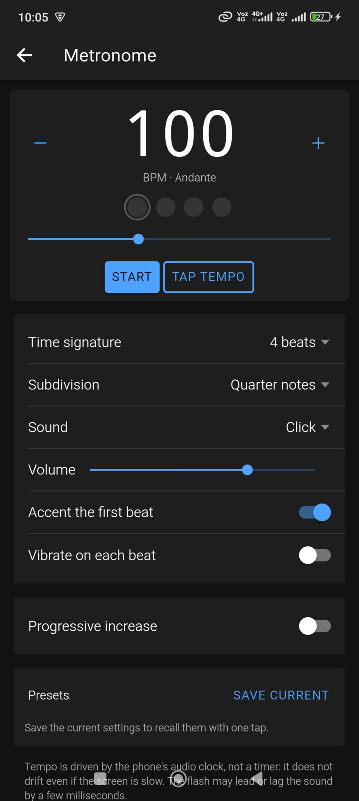
Metronome with tap tempo, time signature, subdivisions, sounds, accent and progressive tempo increase.
Tone generator: waveform, volume starting low, frequency by value, slider or musical note.